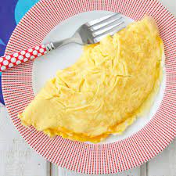

The cheese omelette is a popular breakfast in Western countries. It typically consists of beaten eggs that are cooked in a pan with either butter or a form of oil, and folded in half with cheese inside the fold. There are many ways to go about cooking an omelette in that one can use a large variety of spices and/or sauces to enhance the flavor.